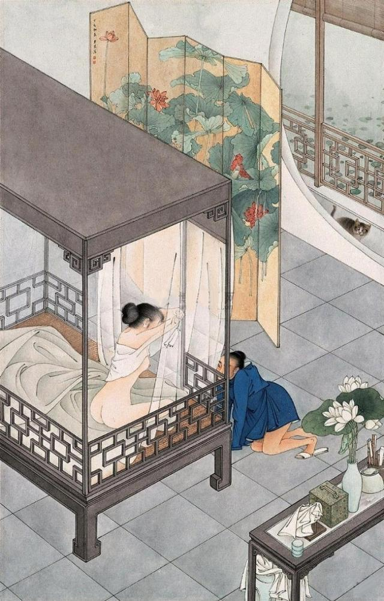
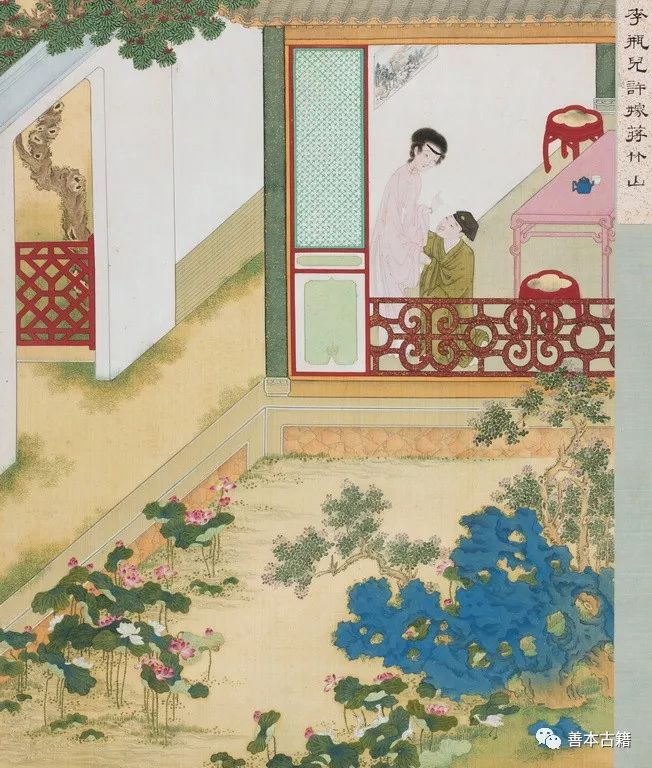

第十七回 宇给事劾倒杨提督 李瓶儿许嫁蒋竹山#
诗曰：
早知君爱歇，本自无容妒；谁使恩情深，今来反相误。
愁眠罗帐晓，泣坐金闺暮；独有梦中魂，犹言意如故。
话说五月二十日，帅府周守备生日。西门庆封五星分资、两方手帕，打选衣帽齐整，骑匹大白马，四个小厮跟随，往他家拜寿。席间也有夏提刑、张团练、荆千户、贺千户一班武官儿饮酒，鼓乐迎接，搬演戏文。玳安接了衣裳，回马来家。到日西时分，又骑马去接，走到西街口上，撞见冯妈妈，问道：“冯妈妈那里去？”冯妈妈道：“你二娘使我来请你爹。雇银匠整理头面完备，今日送来，请你爹那里瞧去。你二娘还和你爹说话哩！”玳安道：“俺爹今日在守备府周老爷处吃酒，我如今接去。你老人家回罢。等我到那里，对爹说就是了。”冯妈妈道：“累你好歹说声，你二娘等着哩！”这玳安打马迳到守备府。众官员正饮酒间，玳安走到西门庆席前，说道：“小的回马家来时，在街口撞遇冯妈妈，二娘使了来说，雇银匠送了头面来了，请爹瞧去，还要和爹说话哩。”西门庆听了，就要起身，那周守备那里肯放，拦门拿巨杯相劝。西门庆道：“蒙大人见赐，宁可饮一杯，还有些小事，不能尽情，恕罪，恕罪！”于是一饮而尽，辞周守备上马，迳到李瓶儿家。
妇人接着，茶汤毕，西门庆吩咐玳安回马家去，明日来接。玳安去了。李瓶儿叫迎春盒儿内取出头面来，与西门庆过目。黄烘烘火焰般一副好头面，收过去，单等二十四日行礼，出月初四日准娶。妇人满心欢喜，连忙安排酒来，和西门庆畅饮开怀。吃了一回，使丫鬟房中搽抹凉席干净。两个在纱帐之中，香焚兰麝，衾展鲛绡，脱去衣裳，并肩叠股，饮酒调笑。良久，春色横眉，淫心荡漾。西门庆先和妇人云雨一回，然后乘着酒兴，坐于床上，令妇人横躺于衽席之上，与他品箫。但见：
不竹不丝不石，肉音别自唔咿。流苏瑟瑟碧纱垂，辨不出宫商角徵。
一点樱桃欲绽，纤纤十指频移。深吞添吐两情痴，不觉灵犀味美。
西门庆醉中戏问妇人：“当初花子虚在时，也和他干此事不干？”妇人道：“他逐日睡生梦死，奴那里耐烦和他干这营生！他每日只在外边胡撞，就来家，奴等闲也不和他沾身。况且老公公在时，和他另在一间房睡着，我还把他骂的狗血喷了头。好不好，对老公公说了，要打倘棍儿。奴与他这般顽耍，可不硶杀奴罢了！谁似冤家这般可奴之意，就是医奴的药一般。白日黑夜，教奴只是想你。”两个耍一回，又干了一回。旁边迎春伺候下一个小方盒，都是各样细巧果品，小金壶内满泛琼浆。从黄昏掌上灯烛，且干且歇，直耍到一更时分。只听外边一片声打的大门响，使冯妈妈开门瞧去，原来是玳安来了。西门庆道：“我吩咐明日来接，这咱晚又来做甚么？”因叫进来问他。那小厮慌慌张张走到房门首，因西门庆与妇人睡着，又不敢进来，只在帘外说道：“姐姐、姐夫都搬来了，许多箱笼在家中。大娘使我来请爹，快去计较话哩。”这西门庆听了，只顾犹豫：“这咱晚，端的有甚缘故？须得到家瞧瞧。”连忙起来。妇人打发穿上衣服，做了一盏暖酒与他吃。
打马一直到家，只见后堂中秉着灯烛，女儿女婿都来了，堆着许多箱笼床帐家伙，先吃了一惊，因问：“怎的这咱来家？”女婿陈敬济磕了头，哭说：“近日朝中，俺杨老爷被科道官参论倒了。圣旨下来，拿送南牢问罪。门下亲族用事人等，都问拟枷充军。昨日府中杨干办连夜奔来，透报与父亲知道。父亲慌了，教儿子同大姐和些家伙箱笼，且暂在爹家中寄放，躲避些时。他便起身往东京我姑娘那里，打听消息去了。待事宁之日，恩有重报，不敢有忘。”西门庆问：“你爹有书没有？”陈敬济道：“有书在此。”向袖中取出，递与西门庆。折开观看，上面写道：
眷生陈洪顿首书奉大德西门庆亲家台览：余情不叙。兹因北虏犯边，抢过雄州地界，兵部王尚书不发救兵，失误军机，连累朝中杨老爷，俱被科道官参劾太重。圣旨恼怒，拿下南牢监禁，会同三法司审问。其门下亲族用事人等，俱照例发边卫充军。生一闻消息，举家惊惶，无处可投，先打发小儿、令爱，随身箱笼家活，暂借亲家府上寄寓。生即上京，投在姐夫张世廉处，打听示下。待事务宁帖之日，回家恩有重报，不敢有忘。诚恐县中有甚声色，生令小儿外具银五百两，相烦亲家费心处料，容当叩报没齿不忘。灯下草书，不宣。
仲夏二十日洪再拜
西门庆看了，慌了手脚，教吴月娘安排酒饭，管待女儿、女婿。就令家下人等，打扫厅前东厢房三间，与他两口儿居住。把箱笼细软都收拾月娘上房来。陈敬济取出他那五百两银子，交与西门庆打点使用。西门庆叫了吴主管来，与他五百两银子，教他连夜往县中承行房里，抄录一张东京行下来的文书邸报来看。上面端的写的是甚言语：
兵科给事中宇文虚中等一本，恳乞宸断，亟诛误国权奸，以振本兵，以消虏患事：臣闻夷狄之祸，自古有之。周之猃狁，汉之匈奴，唐之突厥，迨及五代而契丹浸强，至我皇宋建国，大辽纵横中原者已非一日。然未闻内无夷狄而外萌夷狄之患者。语云：霜降而堂钟鸣，雨下而柱础润。以类感类，必然之理。譬若病夫，腹心之疾已久，元气内消，风邪外入，四肢百骸，无非受病，虽卢扁莫之能救，焉能久乎？今天下之势，正犹病夫［兀王］羸之极矣。君犹元首也，辅臣犹腹心也，百官犹四肢也。陛下端拱于九重之上，百官庶政各尽职于下。元气内充，荣卫外扞，则虏患何由而至哉？今招夷虏之患者，莫如崇政殿大学士蔡京者：本以憸邪奸险之资，济以寡廉鲜耻之行，谗谄面谀，上不能辅君当道，赞元理化；下不能宣德布政，保爱元元。徒以利禄自资，希宠固位，树党怀奸，蒙蔽欺君，中伤善类。忠士为之解体，四海为之寒心。联翩朱紫，萃聚一门。迩者河湟失议，主议伐辽，内割三郡，郭药师之叛，卒使金虏背盟，凭陵中原。此皆误国之大者，皆由京之不职也。王黼贪庸无赖，行比俳优。蒙京汲引，荐居政府，未几谬掌本兵。惟事慕位苟安，终无一筹可展。乃者张达残于太原，为之张皇失散。今虏犯内地，则又挈妻子南下，为自全之计。其误国之罪，可胜诛戮？杨戬本以纨绔膏粱叨承祖荫，凭籍宠灵典司兵柄，滥膺阃外，大奸似忠，怯懦无比。此三臣者，皆朋党固结，内外蒙蔽，为陛下腹心之蛊者也。数年以来，招灾致异，丧本伤元，役重赋烦，生民离散，盗贼猖獗，夷虏犯顺，天下之膏腴已尽，国家之纲纪废弛，虽擢发不足以数京等之罪也。臣等待罪该科，备员谏职，徒以目击奸臣误国，而不为皇上陈之，则上辜君父之恩，下负平生所学。伏乞宸断，将京等一干党恶人犯，或下廷尉，以示薄罚；或致极典，以彰显戮；或照例枷号；或投之荒裔，以御魑魅。庶天意可回，人心畅快，国法以正，虏患自消。天下幸甚！臣民幸甚！
奉圣旨：“蔡京姑留辅政。王黼、杨戬着拿送三法司，会问明白来说。钦此钦遵。”续该三法司会问过，并党恶人犯王黼、杨戬，本兵不职，纵虏深入，荼毒生民，损兵折将，失陷内地，律应处斩。手下坏事家人、书办、官掾、亲家董升、卢虎、杨盛、庞宣、韩宗仁、陈洪、黄玉、刘盛、赵弘道等，查出有名人犯，俱问拟枷号一个月，满日发边卫充军。
西门庆不看，万事皆休；看了耳边厢只听飕的一声，魂魄不知往那里去了。就是：
惊伤六叶连肝肺，吓坏三毛七孔心。
当下即忙打点金银宝玩，驮装停当，把家人来保、来旺叫到卧房中，悄悄吩咐，如此这般：“雇头口星夜上东京打听消息。不消到你陈亲家老爹下处。但有不好声色，取巧打点停当，速来回报。”又与了他二人二十两银子。绝早五更雇脚夫起程，上东京去了，不在话下。
西门庆通一夜不曾睡着，到次日早，吩咐来昭、贲四，把花园工程止住，各项匠人都且回去，不做了。每日将大门紧闭，家下人无事亦不许往外去。西门庆只在房里走来走去，忧上加忧，闷上加闷，如热地蜒蚰一般，把娶李瓶儿的勾当丢在九霄云外去了。吴月娘见他愁眉不展，面带忧容，只得宽慰他，说道：“他陈亲家那边为事，各人冤有头债有主，你也不需焦愁如此。”西门庆道：“你妇人都知道些甚么？陈亲家是我的亲家，女儿、女婿两个孽障搬来咱家住着，平昔街坊邻舍恼咱的极多，常言：机儿不快梭儿快，打着羊驹驴战。倘有小人指搠，拔树寻根，你我身家不保。”正是：关门家里坐，祸从天上来。这里西门庆在家纳闷，不题。
且说李瓶儿等了一日两日，不见动静，一连使冯妈妈来了两遍，大门关得铁桶相似。等了半日，没一个人牙儿出来，竟不知怎的。看看到二十四日，李瓶儿又使冯妈妈送头面来，就请西门庆过去说话。叫门不开，立在对过房檐下等。少顷，只见玳安出来饮马，看见便问：“冯妈妈，你来做甚么？”冯妈妈说：“你二娘使我送头面来，怎的不见动静？请你爹过去说话哩。”玳安道：“俺爹连日有些事儿，不得闲。你老人家还拿头面去，等我饮马回来，对俺爹说就是了。”冯妈妈道：“好哥哥，我这在里等着，你拿进头面去和你爹说去。你二娘那里好不恼我哩！”这玳安一面把马拴下，走到里边，半日出来道：“对爹说了，头面爹收下了，教你上覆二娘，再待几日儿，我爹出来往二娘那里说话。”这冯妈妈一直走来，回了妇人话。妇人又等了几日，看看五月将尽，六月初旬，朝思暮盼，音信全无，梦攘魂劳，佳期间阻。正是：
懒把蛾眉扫，羞将粉脸匀。满怀幽恨积，憔悴玉精神。
妇人盼不见西门庆来，每日茶饭顿减，精神恍惚。到晚夕，孤眠枕上展转踌蹰。忽听外边打门，仿佛见西门庆来到。妇人迎门笑接，携手进房，问其爽约之情，各诉衷肠之话。绸缪缱绻，彻夜欢娱。鸡鸣天晓，便抽身回去。妇人恍然惊觉，大呼一声，精魂已失。冯妈妈听见，慌忙进房来看。妇人说道：“西门他爹刚才出去，你关上门不曾？”冯妈妈道：“娘子想得心迷了，那里得大官人来？影儿也没有！”妇人自此梦境随邪，夜夜有狐狸假名抵姓，摄其精髓。渐渐形容黄瘦，饮食不进，卧床不起。冯妈妈向妇人说，请了大街口蒋竹山来看。其人年不上三十，生的五短身材，人物飘逸，极是轻浮狂诈。请入卧室，妇人则雾鬓云鬟，拥衾而卧，似不胜忧愁之状。茶汤已罢，丫鬟安放褥垫。竹山就床诊视脉息毕，因见妇人生有姿色，便开口说道：“学生适诊病源，娘子肝脉弦出寸口而洪大，厥阴脉出寸口久上鱼际，主六欲七情所致。阴阳交争，乍寒乍热，似有郁结于中而不遂之意也。似疟非疟，似寒非寒，白日则倦怠嗜卧，精神短少；夜晚神不守舍，梦与鬼交。若不早治，久而变为骨蒸之疾，必有属纩之忧矣。可惜，可惜！”妇人道：“有累先生，俯赐良剂。奴好了，重加酬谢。”竹山道：“学生无不用心，娘子若服了我的药，必然贵体全安。”说毕起身。这里送药金五星，使冯妈妈讨将药来。妇人晚间吃了药下去，夜里得睡，便不惊恐。渐渐饮食加添，起来梳头走动。那消数日，精神复旧。

一日，安排了一席酒肴，备下三两银子，使冯妈妈请过竹山来相谢。蒋竹山自从与妇人看病，怀觊觎之心已非一日。一闻其请，即具服而往。延之中堂，妇人盛妆出见，道了万福，茶汤两换，请入房中。酒肴已陈，麝兰香蔼。小丫鬟绣春在旁，描金盘内托出三两白金。妇人高擎玉盏，向前施礼，说道：“前日，奴家心中不好，蒙赐良剂，服之见效。今粗治了一杯水酒，请过先生来知谢知谢。”竹山道：“此是学生分内之事，理当措置，何必计较！”因见三两谢礼，说道：“这个学生怎么敢领？”妇人道：“些须微意，不成礼数，万望先生笑纳。”辞让了半日，竹山方才收了。妇人递酒，安下坐次。饮过三巡，竹山偷眼睃视妇人，粉妆玉琢，娇艳惊人，先用言以挑之，因道：“学生不敢动问，娘子青春几何？”妇人道：“奴虚度二十四岁。”竹山道：“似娘子这等妙年，生长深闺，处于富足，何事不遂，而前日有此郁结不足之病？”妇人听了，微笑道：“不瞒先生，奴因拙夫弃世，家事萧条，独自一身，忧愁思虑，何得无病！”竹山道：“原来娘子夫主殁了。多少时了？”妇人道：“拙夫从去岁十一月得伤寒病死了，今已八个月。”竹山道：“曾吃谁的药来？”妇人道：“大街上胡先生。”竹山道：“是那东街上刘太监房子住的胡鬼嘴儿？他又不是我太医院出身，知道甚么脉，娘子怎的请他？”妇人道：“也是因街坊上人荐举请他来看。还是拙夫没命，不干他事。”竹山又道：“娘子也还有子女没有？”妇人道：“儿女俱无。”竹山道：“可惜娘子这般青春妙龄之际，独自孀居，又无所出，何不寻其别进之路？甘为幽闷，岂不生病！”妇人道：“奴近日也讲着亲事，早晚过门。”竹山便道：“动问娘子与何人作亲？”妇人道：“是县前开生药铺西门大官人。”竹山听了道：“苦哉，苦哉！娘子因何嫁他？学生常在他家看病，最知详细。此人专在县中包揽说事，广放私债，贩卖人口，家中丫头不算，大小五六个老婆，着紧打倘棍儿，稍不中意，就令媒人领出卖了。就是打老婆的班头，坑妇女的领袖。娘子早是对我说，不然进入他家，如飞蛾投火一般，坑你上不上，下不下，那时悔之晚矣。况近日他亲家那边为事干连，在家躲避不出，房子盖的半落不合的，都丢下了。东京关下文书，坐落府县拿人。到明日他盖这房子，多是入官抄没的数儿。娘子没来由嫁他做甚？”一篇话把妇人说的闭口无言。况且许多东西丢在他家，寻思半晌，暗中跌脚：“嗔怪道一替两替请着他不来，他家中为事哩！”又见竹山语言活动，一团谦恭：“奴明日若嫁得恁样个人也罢了，不知他有妻室没有？”因说道：“既蒙先生指教，奴家感戴不浅，倘有甚相知人家，举保来说，奴无有个不依之理。”竹山乘机请问：“不知要何等样人家？学生打听的实，好来这里说。”妇人道：“人家到也不论大小，只要象先生这般人物的。”这蒋竹山不听便罢，听了此言，欢喜的满心痒，不知搔处，慌忙走下席来，双膝跪下告道：“不瞒娘子说，学生内帏失助，中馈乏人，鳏居已久，子息全无。倘蒙娘子垂怜，肯结秦晋之缘，足称平生之愿。学生虽衔环结草，不敢有忘。”妇人笑笑，以手携之，说道：“且请起，未审先生鳏居几时？贵庚多少？既要做亲，须得要个保山来说，方成礼数。”竹山又跪下哀告道：“学生行年二十九岁，正月二十七日卯时建生，不幸去年荆妻已故，家缘贫乏，实出寒微。今既蒙金诺之言，何用冰人之讲。”妇人笑道：“你既无钱，我这里有个妈妈姓冯，拉他做个媒证。也不消你行聘，择个吉日良时，招你进来，入门为赘。你意下若何？”这蒋竹山连忙倒身下拜：“娘子就如同学生重生父母，再长爹娘。夙世有缘，三生大幸矣！”一面两个在房中各递了一杯交欢酒，已成其亲事。竹山饮至天晚回家。

妇人这里与冯妈妈商议说：“西门庆如此这般为事，吉凶难保。况且奴家这边没人，不好了一场，险不丧了性命。为今之计，不如把这位先生招他进来，有何不可？”到次日，就使冯妈妈递信过去，择六月十八日大好日子，把蒋竹山倒踏门招进来，成其夫妻。过了三日，妇人凑了三百两银子，与竹山打开两间门面，店内焕然一新。初时往人家看病只是走，后来买了一匹驴儿骑着，在街上往来，不在话下。正是：
一洼死水全无浪，也有春风摆动时。